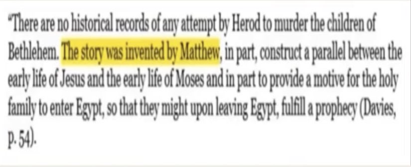

How Matthew Took Zechariah 9 out of context
The author of Matthew quotes an alleged prophecy from the Old Testament and applies it to the Biblical Jesus. 👇
“As they approached Jerusalem and came to Bethphage on the Mount of Olives, Jesus sent two disciples, saying to them, ‘Go to the village ahead of you, and at once you will find a donkey tied there, with her colt by her. Untie them and bring them to me. If anyone says anything to you, say that the Lord needs them, and he will send them right away.’ This took place to fulfill what was spoken through the prophet:
“Say to Daughter Zion, ‘See, your king comes to you gentle and riding on a donkey, and on a colt, the foal of a donkey.’”
(Matthew 21:1-5)
The alleged prophecy is from Zechariah 9:9.
👇
“Rejoice greatly, Daughter Zion! Shout, Daughter Jerusalem! See, your king comes to you, righteous and victorious, lowly and riding on a donkey, on a colt, the foal of a donkey.”
(Zechariah 9:9)
The problem is that if you read further down from the passage it would actually show that the Biblical Jesus is a false prophet. How so? Let’s read further down. 👇
“I will take away the chariots from Ephraim and the warhorses from Jerusalem, and the battle bow will be broken. He will proclaim peace to the nations. His rule will extend from sea to sea and from the River to the ends of the earth. As for you, because of the blood of my covenant with you, I will free your prisoners from the waterless pit. Return to your fortress, you prisoners of hope; even now I announce that I will restore twice as much to you. I will bend Judah as I bend my bow and fill it with Ephraim.
I will rouse your sons, Zion, against your sons, Greece, and make you like a warrior’s sword.”
(Zechariah 9:10-13)
First of all the Biblical Jesus did not rule the world in his first coming however let’s assume for the sake of argument that this will happen in his second coming.
If we read verse 13 it says that Israel will go to war with Greece during the reign of the Messiah.
Why would Israel being going to war with Greece in the Biblical Jesus’s second coming? Greece and Israel don’t have any ill feelings toward each other currently.
If Christians say that Greece and Israel going to war happened in the Biblical Jesus’s first coming then this is also false. Zechariah 9:10 says that the Messiah will rule the world before Greece and Israel go to war, but the Biblical Jesus didn’t rule the world at that time.
——-
How Matthew Took Jeremiah 31 out of context
The author of Matthew quotes an alleged prophecy from the Old Testament and applies it to the Biblical Jesus. 👇
“When Herod realized that he had been outwitted by the Magi, he was furious, and he gave orders to kill all the boys in Bethlehem and its vicinity who were two years old and under, in accordance with the time he had learned from the Magi. Then what was said through the prophet Jeremiah was fulfilled:
‘A voice is heard in Ramah, weeping and great mourning, Rachel weeping for her children and refusing to be comforted, because they are no more.’”
(Matthew 2:16-18)
The alleged prophecy is taken from Jeremiah 31:15.:point_down:
“This is what the Lord says: ‘A voice is heard in Ramah, mourning and great weeping, Rachel weeping for her children and refusing to be comforted, because they are no more.”
(Jeremiah 31:15)
The problem here is that if you read further in Jeremiah 31 the context makes it clear that it’s referring to the Babylonian exile, and that the children were ALIVE!!
👇
“This is what the Lord says: ‘Restrain your voice from weeping and your eyes from tears,
for your work will be rewarded,” declares the Lord. ’They will return from the land of the enemy. So there is hope for your descendants,’ declares the Lord. ’Your children will return to their own land.’”
(Jeremiah 31:16-17)
How could Jeremiah 31:15 be referring to an infanticide in the far future when Jeremiah 31 makes it clear that the children will not die? If Jeremiah 31 is really a prophecy about Herod’s massacre, then it’s a false prophecy because Herod ended up killing the children in Bethlehem when Jeremiah 31 says that the children will not die and will return safely to their land.
———
How Matthew Took Micah 5 out of context
The author of Matthew quotes an alleged prophecy from the Old Testament and applies it to the Biblical Jesus. 👇
“When King Herod heard this he was disturbed, and all Jerusalem with him. When he had called together all the people’s chief priests and teachers of the law, he asked them where the Messiah was to be born. “In Bethlehem in Judea,” they replied, ’for this is what the prophet has written: ‘But you, Bethlehem, in the land of Judah, are by no means least among the rulers of Judah; for out of you will come a ruler who will shepherd my people Israel.’”
(Matthew 2:3-6)
The alleged prophecy is in Micah 5:2-4.
👇
“But you, Bethlehem Ephrathah, though you are small among the clans of Judah,
out of you will come for me one who will be ruler over Israel, whose origins are from of old, from ancient times.” Therefore Israel will be abandoned until the time when she who is in labor bears a son, and the rest of his brothers return to join the Israelites. He will stand and shepherd his flock in the strength of the Lord, in the majesty of the name of the Lord his God.
And they will live securely, for then his greatness will reach to the ends of the earth.”
(Micah 5:2-4)
The problem is that if you read Micah 5 in its full context the passage though Messianic, cannot possibly be referring to the Biblical Jesus. This is because the prophesied leader mentioned would contend against the Assyrian empire:
👇
“And he will be our peace when the Assyrians invade our land and march through our fortresses. We will raise against them seven shepherds, even eight commanders, who will rule the land of Assyria with the sword, the land of Nimrod with drawn sword. He will deliver us from the Assyrians when they invade our land and march across our borders.”
(Micah 5:5-6)
The Assyrian empire was destroyed centuries before Jesus was even born. How could he possibly lead the Israelites against the Assyrians if the empire doesn’t exist anymore?
Furthermore, the passage does not mention that the promised leader would come from the town of Bethlehem but from the clan of Bethlehem Ephrathah. In other words, the author of the of Matthew failed to realize that the reference was not to the town of Bethlehem but to a clan of the same name.
——
Matthew mixes up Jeremiah and Zechariah
Credit to Jim Lippard from infidels.org
Matthew 26:14-15 states that Judas Iscariot was paid thirty pieces of silver by the Jewish priests as payment for his betrayal.
👇
“Then one of the twelve, named Judas Iscariot, went to the chief priests and said, “What are you willing to give me to betray Him to you?” And they set out for him thirty pieces of silver.”
(Matthew 26:14-15)
Matthew 27:9-10 claims that this is done to fulfill a prophecy of Jeremiah:
“Then that which was spoken through Jeremiah the prophet was fulfilled: “And they took the thirty pieces of silver, the price of the One whose price had been set by the sons of Israel; and they gave them for the Potter’s Field, just as the Lord directed me.”
(Matthew 27:9-10)
The problem here is that the quoted verse appears nowhere in the book of Jeremiah. There is a verse which is quite similar in the book of Zechariah, but there the prophet Zechariah is speaking about himself and no betrayal is involved. 👇
“And I said to them, ‘If it is good in your sight, give me my wages; but if not, never mind!’ So they weighed out thirty shekels of silver as my wages. Then the Lord said to me, ‘Throw it to the potter, that magnificent price at which I was valued by them.’ So I took the thirty shekels of silver and threw them to the potter in the house of the Lord.”
(Zechariah 11:12-13)
This verse in Zechariah isn’t even a prophecy of anything if you look at the context. If Matthew actually intended to cite Zechariah instead of Jeremiah, Matthew would still be in error no matter what.
Christian apologist Gleason Archer (1982, p. 345) tries to resolve this problem by citing various verses in Jeremiah which refer to "the prophet purchasing a field in Anathoth for a certain number of shekels" (Jeremiah 32:6-9), "the prophet as watching a potter fashioning earthenware vessels in his house" (Jeremiah 18:2), "a potter near the temple" (Jeremiah 19:2), and God saying "Even so I will break this people and this city as one breaks a potter's vessel" (Jeremiah 19:11).
Why does Archer write "a certain number of shekels" instead of giving the number specified in Jeremiah?
Because Jeremiah 32:9 says seventeen shekels, not thirty. What Archer has done here is simply look for the words "potter," "shekel," and "field" in an attempt to argue that Matthew really was referring to Jeremiah rather than Zechariah. But there is really no question that Matthew meant to refer to Zechariah rather than Jeremiah.
——
How Matthew Took Isaiah 7 Out of Context
The author of Matthew quotes an alleged prophecy from the Old Testament and applies it to the Biblical Jesus. 👇
“She will give birth to a son, and you are to give him the name Jesus, because he will save his people from their sins.’All this took place to fulfill what the Lord had said through the prophet: ‘The virgin will conceive and give birth to a son, and they will call him Immanuel’ (which means “God with us”).”
(Matthew 1:21-23)
This alleged prophecy is taken from Isaiah 7:14.
👇
“Therefore the Lord himself will give you a sign: The virgin will conceive and give birth to a son, and will call him Immanuel.”
(Isaiah 7:14)
The issue is that if we read Isaiah 7 in context then it’s impossible for it to be talking about the Biblical Jesus. If we look at Isaiah 7:16 it gives us more information about Immanuel
👇
“for before the boy knows enough to reject the wrong and choose the right, the land of the two kings you dread will be laid waste.”
(Isaiah 7:16)
What kings and land is the passage referring to? The very beginning of Isaiah 7 gives us the answer. 👇
“When Ahaz son of Jotham, the son of Uzziah, was king of Judah, King Rezin of Aram and Pekah son of Remaliah king of Israel marched up to fight against Jerusalem, but they could not overpower it.”
(Isaiah 7:1)
Did these two kings exist at the time of the Biblical Jesus? No!
Did the land of Syria and Israel lay to waste before the Biblical Jesus knew the difference between good and evil? No!
So if Isaiah 7 is a prophecy about the Biblical Jesus then it’s a false prophecy.
Christian Scholars Say that Herod’s Massacre is Fictional
This is what top Christian scholars Dale Allison and W.D.Davies have said regarding this historical error.
👇

Historian and Scholar Paul L. Maier says the following:
“A majority of Herod biographers, and "probably a majority of [...] biblical scholars", hold the event to be myth or legend.”
Source:
Maier, Paul L. (1998). "Herod and the Infants of Bethlehem". In Summers, Ray; Vardaman, Jerry (eds.). Chronos, Kairos, Christos II: Chronological, Nativity, and Religious Studies in Memory of Ray Summers. Mercer University Press. ISBN 978-0-86554-582-3.